Galeria
Julianowska 26
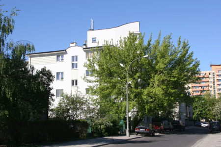
Budynek mieszkalny wielorodzinny Julianowska 26
w Warszawie [1999 - 2000] – 2.000 m2 PUM
Krzywińska 11
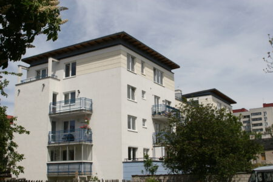
Budynek mieszkalny wielorodzinny Krzywińska 11
w Warszawie [2000 - 2001] – 1.200 m2 PUM
Łąkocińska 15
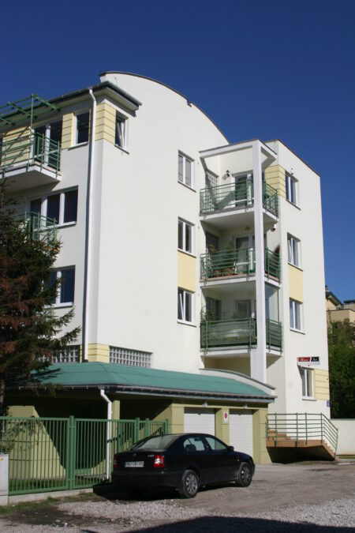
Budynek mieszkalny wielorodzinny Łąkocińska 15
w Warszawie [2002 - 2003] – 2.000 m2 PUM
Hodowlana 3/5
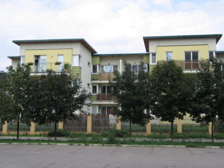
Budynek mieszkalny wielorodzinny Hodowlana 3/5
w Warszawie [2004] – 1.050 m2 PUM
„Nad Strugą” Malborska
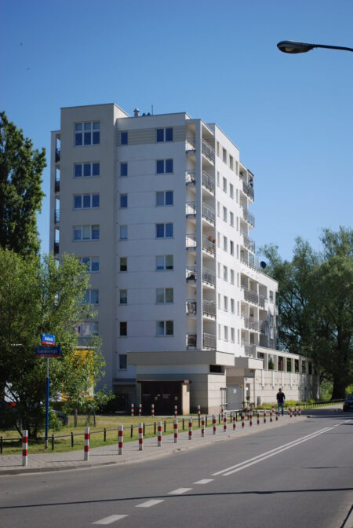
Zespół zabudowy wielorodzinnej „Nad Strugą” Malborska
w Warszawie [2004-2005] – 4.800 m2 PUM
Reymonta
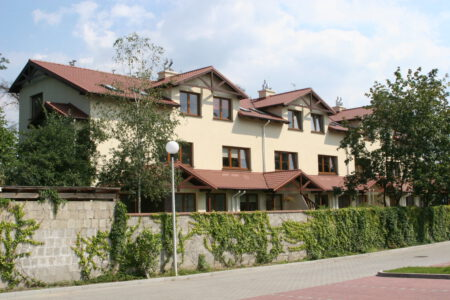
Zespół zabudowy wielorodzinnej Reymonta
w Józefowie [2004-2005] – 900 m2 PUM
Atrium
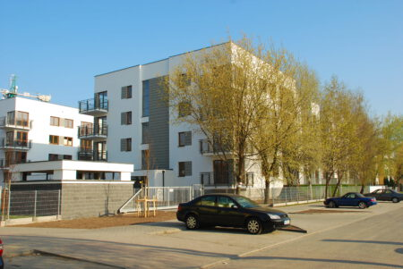
Osiedle Atrium
w Pruszkowie [2007-2011] – 9.450 m2 PUM
Wiśniowy Sad 1 i 2
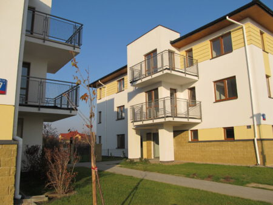
Osiedle Wiśniowy Sad
w Warszawie [2008-2011] – 14.100 m2 PUMiUS
Świderska 1 i 2
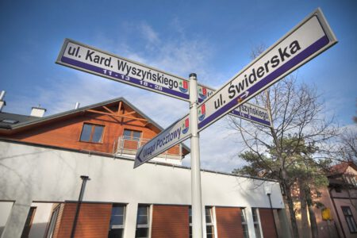
Osiedle Świderska
w Józefowie [2007-2008] – 3.300 m2 PUMiUS
Patio Ząbki
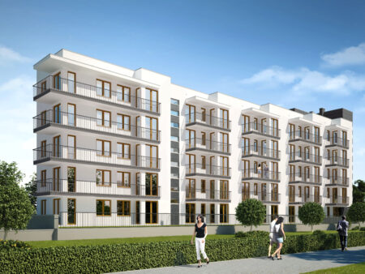
Budynek mieszkalny wielorodzinny Patio Ząbki
[2008-2011] – 2.350 m2 PUM
Nowe Miasto Pruszków
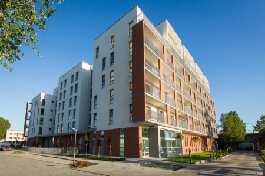
Zespół zabudowy wielorodzinnej Nowe Miasto Pruszków
[2019-2015] – 13.900 m2 PUMiUS
Future Gardens / Warzelnicza
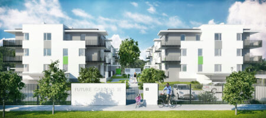
Osiedle Future Gardens / Warzelnicza
[2016-2017] – 13.900 m2 PUMiUS